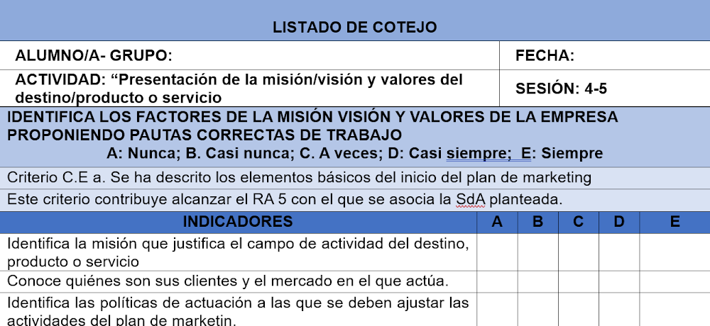

Actividad: ¿Quién somos y hacia dónde queremos ir?
Descripción
Para que el plan de marketing tenga éxito, cada grupo de trabajo tiene que dar respuesta a las siguientes preguntas:
1.- ¿A qué se dedica el la empresa?
2.- ¿Quiénes son sus clientes?
3.- ¿Qué beneficios busca?
Cada grupo deberá realizar un estudio de la misión/visión y valores corporativos para comenzar el reto del plan de marketing que va elaborar, investigarán su historia, atractivos, público objetivo, Se trata de un buen inicio compartiendo avances, ideas y sugerencias entre los miembros de los distintos grupos.
Agrupamiento: 2 grupos (3 pax/grupo)
Sesiones: 2 sesiones.
Herramientas: Internet, libros, Teams, entorno Microsoft 365.
¿Qué se les pide? Porfolio, documento que resuma el punto de partida, pueden hacerlo en formato digital. Dicho porfolio se entregará a través del grupo de Teams en el apartado tareas con fecha tope de entrega 14 de abril de 2026.
Evaluacion:
